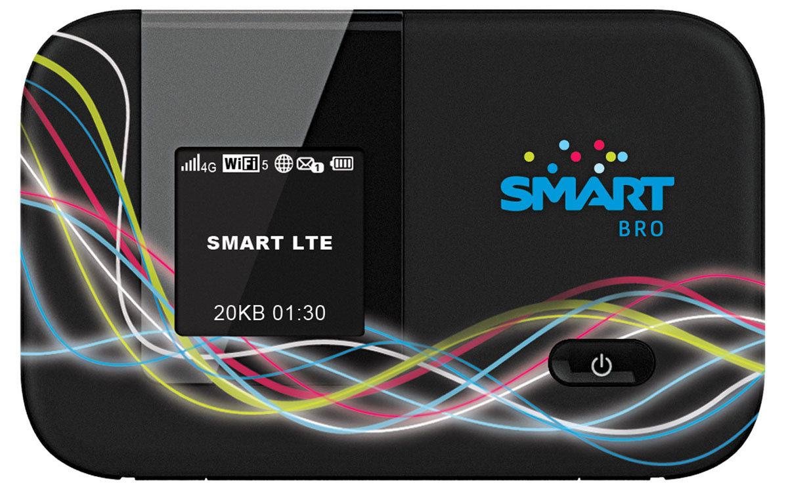

JUMP CENTER CEBU. If you need help on such things as how to connect your phone to the Internet or how to avail yourself of mobile data packages, you can visit the Jump Center in SM City Cebu. In the center, you can also try out various devices like the latest smartphones and pocket Wi-Fi devices.
Travel Smart
While the Sinulog excitement and the charms of Cebu's beaches, mountains, and other natural attractions may tempt you to dump everything, the need to be connected may still beckon. Dependable cellphone and mobile Internet connection are now as important to any tourist as a change of clothes. Why wait to get home to share your Sinulog experience when you can immediately call, send SMS, email, send picture messages, Tweet, post Facebook updates or even check in online?
Good thing, there’s wireless leader Smart Communications Inc. (Smart) which, not only provides the widest and strongest coverage in Cebu and throughout the Philippines, but also the widest array of services.
As soon as you arrive at the Mactan Cebu International Airport, get a Smart SIM or any of its mobile Internet products to make sure you stay connected even if you are off the grid. You can buy Smart products from any cellphone shop or retailer or you can go to its wireless centers in SM City Cebu-PLDT Jones and in Metro Ayala Cebu.
Text, call packages
Filipinos love to text and Smart provides the best packages for sending text messages and calling. With 57.3 million subscribers as of June 2013, Smart has the biggest market share in the country.
The company's prepaid brand, Smart Buddy, offer the lowest per-day costs compared with any other existing prepaid packages. Its Unli Call and Text 150 packages, for example, gives subscribers the power to make unlimited calls and send unlimited texts for 7 days within the Smart network (Smart, Sun and Talk and Text) and an additional 100 text messages to other networks for just P150. Its Unli Call and Text 299 offers unlimited calling and texting for 15 days and 150 text messages to other networks for just P299.
Unlimited texting is automatically activated while unlimited calling requires that you add the prefix 6406 (example 64069181234567) when you dial.
Its Mega 250 package offers unlimited SMS to all networks (Smart, Sun, Talk and Text, Globe and TM), 180 minutes of calls to Smart, Sun and Talk and Text and 100MB of mobile Internet for 30 days. The SMS and mobile Internet are automatically activated. To avail yourself of the 180 minutes of free calls to Smart, Sun and Talk and Text numbers, you dial *2477 + 11-digit mobile number, example *247709101234567.
Apart from the affordable packages, Smart offers customers a better calling and texting experience with recent improvements on its network. The company spent P67.1 billion to transform its network allowing it to handle more voice and data traffic.
With a fiber optic network of more than 54,000 kilometers, Smart has the widest information highway out there. Users get to experience the same blazing speed even if many people use it at the same time.
POCKET WIFI LTE. Smart Bro Pocket WiFi LTE offers speeds of up to 42Mbps on LTE-enabled devices. Smart's LTE service is available in major cities in the country with a growing number of establishments and locations. Smart leads in LTE coverage and rollout in the Philippines.
Mobile Internet
Smart offers the most dependable and fastest mobile Internet experience. Like its call and text packages, the company has several connectivity options for its users.
One example is "Always On"--a volume-based package that allows casual mobile Internet surfers to pay only for the data they wish to consume.
If a subscriber, for example, would like to use his smartphone only for sending email and checking on social networking sites, he can avail himself of a 25MB Always On plan for only P20 a day. More active Internet users who are into video streaming and data tethering can avail themselves of a 2GB Always On package for P995 valid for one month.
Always On reduces the risk of unexpected data charges as it notifies users via SMS once they have consumed 80% of their package. Upon expiration, charging will revert to the regular pricing of P10 for every 30 minutes of use.
Users who prefer a time-based Internet scheme can still avail of an UNLIsurf package starting at just P50 for a whole day of unlimited surfing and P85 for 2 days. UNLIsurf also comes in P300 (7 days) and P1,200 (30 days) denominations.
Meanwhile, those who would only like to access specific sites such as Facebook, Friendster, Multiply, and Twitter can sign up for a “Web UNLI” package for only P20/site per day.
Just recently, the company announced mobile web messaging promos for such services as WeChat and Line. Prepaid subscribers can use these 2 messaging applications thw whole day for P10 by sending WECHAT10 or LINE10 to 2200. Also available is the Chat All 299 package that allows subscribers to enjoy access to all the Smart's partner chat apps for one month. Thes include Line, WeChat, WhatsApp and Facebook Messenger. To register, just text CHATALL299 to 2200 (for Prepaid and regular Postpaid users) or to 9990 (for Freedom users) or 7577 (for All-in users).
Plug-its, Pocket WiFi
Smart offers several USB dongles for mobile Internet connectivity under its Smart Bro brand. It also offers Pocket WiFi devices that act as portable WiFi zones for up to five gadgets.
Smart Bro Pocket WiFi LTE offers speeds of up to 42Mbps on LTE-enabled devices. Its LTE service is available in major cities in the country with a growing number of establishments and locations.
The Smart Bro Starter Plug It (P995), the Smart Bro Power Plug-It (P1,245), and Smart Bro Pocket WiFi (P3,895) are available in all Smart Wireless Centers and in leading electronics stores nationwide.
Its LTE Pocket Wi-Fi is available at Plan 1299, 1749, and 3500 with a P2,000 cashout.
Various affordable prepaid load and pricing schemes also complement the Smart Bro Plug-It family. You can choose from packages ranging from as little as P10 per 30 minutes of use to P200 for 5 days unlimited surfing (Unlisurf 200). Smart Prepaid LTE also offers various data sachets: P50 for one day; P299 for 7 days; and P995 for 30 days of unlimited LTE usage.
Smart Money
Apart from its innovative communications services, Smart also pioneered mobile commerce in the world with its Smart Money service, which was awarded Best Operator-led Mobile Money Program at the Mobile Money Global Awards held in Dubai in late 2011.
Use Smart Money either through your Smart mobile phone or your Smart Money MasterCard. It’s accepted anywhere MasterCard is.
Launched in 2000, Smart is the world’s first reloadable electronic payment card linked to a mobile phone issued by BDO Unibank, Inc. (BDO) in the Philippines. A trusted enabler of partners here and abroad, Smart Money has established linkages with the leading banks of the Philippines, the country’s primary ATM consortia, local and international remittance companies, and millions of MasterCard partner merchants worldwide.
Smart Money combines the strength of Smart's mobile commerce services and MasterCard's wide merchant acceptance network, enabling consumers to enjoy a wide array of goods and services. There are currently 8.5 million account holders of Smart Money who enjoy the benefits of peer-to-peer mobile money transfers, bills payment, and prepaid airtime top-ups using one of the most ubiquitous gadgets today—the mobile phone.